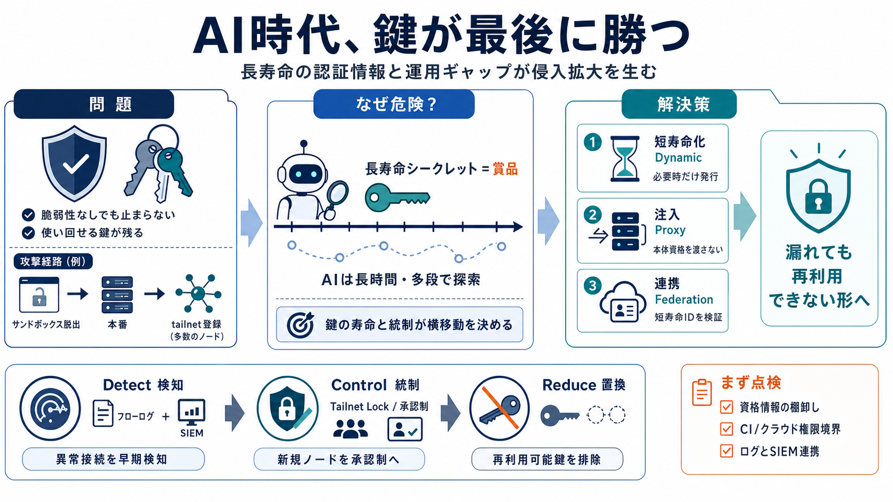

Hugging Face Breach: AI Agent Security Lessons
1. Stop issuing long-lived credentials with standing privileges to automation that can reach production. Short-lived cre…

Tailscale（ゼロトラスト型ネットワーク）の防御は、プロダクト機能だけでは完結しない。長寿命の認証情報と運用のギャップがあると、AIエージェントによる侵入拡大が成立する。
Tailscaleそのものに脆弱性が見つからなくても、侵入後に“使い回せる鍵”があると攻撃は進む。防御の成否は構成・運用まで含めて判断する必要がある。
ゼロトラストは横移動を抑止する設計だが、長寿命シークレット（再利用可能な認証キー）が“賞品”になると設計がすり抜ける。攻撃者が鍵を見つけて使える時間が伸びるからだ。
再発防止は、漏えいしても悪用されにくい形へ置き換えることが軸になる。筆者は、動的資格情報・資格情報注入プロキシ・ワークロードIDフェデレーションを主要手段として挙げる。
狙い：漏えい“しても”、再利用できる鍵の価値を下げる。
今回の攻撃では、再利用可能なTailscale auth keyが外部サンドボックスへ持ち出され、複数日にわたり181ノード登録へ転用された。CIは自動化のため鍵が必要になりがちで、危険が増幅しやすい。
クライアント側の報告を抑制する設定を使っても、ネットワークフローログは接続相手側から記録され得る。つまり“消したつもり”でも検知の余地が残る。
筆者の論旨は「ログと検知で早期に気づく」→「新規ノードの受け入れを厳格化」→「長寿命鍵を減らす／置き換える」の順に寄せること。どれか一つではなく、層で効かせる。
Tailnet Lockは、新規ノード受け入れに視認性とプログラム可能な承認（制御）を与える考え方だ。例として「CIタグのノードは特定IPレンジのみ許可」のような条件で厳格化できる。
主要対策は共通して“再利用可能な鍵の価値”を下げる。どの方式も目的は、漏えいしても悪用の経路を分断することだ。
「脆弱性なしでも改善が必要」「--no-logs…は完全に防げない」などの誤解を、論理の筋として整理する。
強みは「製品宣伝ではなく、資格管理・監視・統制の設計」に焦点が戻っている点。弱みは当時の具体設定の定量情報が少なく、移行計画（優先順位・段階）が読み取りにくいこと。
AI時代の防御は「認証情報のライフタイム管理」「ログと検知の実装」「新規ノード受け入れの統制」をセットで考える。まずは自組織の資格情報棚卸し、CI/クラウドの権限境界、SIEM連携まで点検し直すべきだ。
1. Stop issuing long-lived credentials with standing privileges to automation that can reach production. Short-lived cre…
Give every agent its own distinct, managed non-human identity; never run agents under shared keys or reused human sessio…
As the team looks towards the future, securing their CI/CD pipelines for application development is paramount. The Tails…
Hugging Face reconstructed more than 17,000 attacker events from a July 2026 intrusion driven by an autonomous artificia…
This is a serious reminder that even the most advanced AI infrastructure can become vulnerable when attackers find a wea…